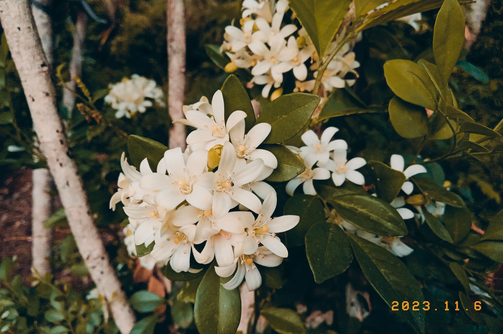
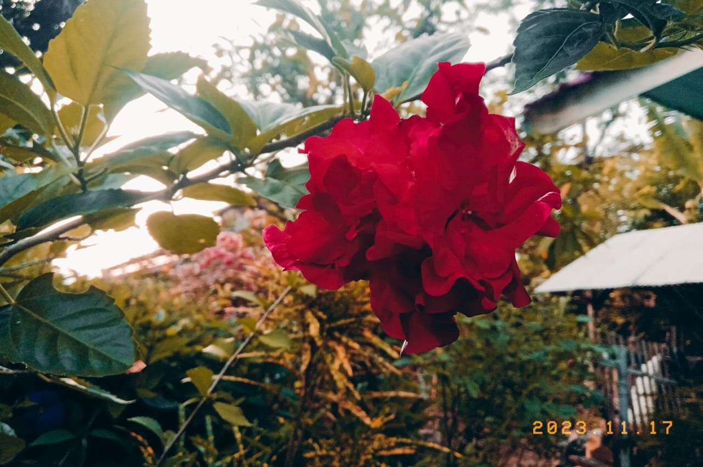

Rekomendasi Bunga yang cocok di tanam di rumah
By Dizamira, May, 03 2024

Resize the browser windows to see the effect.
By Dizamira, May, 03 2024
By Dizamira, April, 30 2024
Biar taman minimalis kamu makin tampak wow, coba deh kasih sentuhan bunga mawar. Selain kelihatannya yang cakep banget, aroma bunga mawarbisa membuat hati terasa damai.Nggak cuma itu, warnanya juga bervariasi, jadi bisa disesuaikan sama selera kamu. Mulai dari merah muda yang manis sampai merah yang bikin hati berdetak kencang hingga warna pink yang memancarkan keromantisan.
Yang asyiknya lagi, bunga mawar ini ngga ribet buat dirawat. Jadi, buat yang pengen taman minimalis tapi tetep kece, tanaman bunga cantik untuk taman minimalis satu ini bisa jadi solusinya. Yuk coba bawa nuansa romantis ke taman rumah dengan bunga mawar yang memukau.
By Dizamira, Maret, 01 2024
Tanaman satu ini mungkin sering kamu temukan di rumah orang. Tanaman semak satu ini tumbuh cukup lambat sehingga kamu tidak perlu sering-sering memangkasnya. Bunga soka akan sangat cantik saat bermekaran, dengan bunga bunganya yang bergerombol jadi tentunya akan membuat rumahmu menjadi lebih indah.
By Dizamira, May, 14 2024
Tanaman bunga cantik untuk taman minimalis selanjutnya yang nggak kalah cantik adalah bunga anggrek atau Orchid. Bentuk anggrek yang elegan dan warnanya yang mencolok langsung bikin taman jadi lebih eksotis. Anggrek dikenal karena keindahan bunganya yang unik dan beragam. Ada ribuan spesies anggrek dengan berbagai warna, bentuk, dan ukuran bunga sehingga setiap anggrek punya daya tariknya sendiri. Anggrek adalah salah satu tanaman hias yang dapat mekar dalam jangka waktu yang lama. Beberapa jenis anggrek bahkan dapat mekar berbulan-bulan. Dengan segala keindahannya, bunga anggrek bisa jadi pilihan yang cocok untuk kamu agar taman minimalis rumah jadi pusat perhatian tetangga!
By Dizamira, February, 30 2024

Tanaman hias air mata pengantin memiliki warna yang mencolok dan memikat hati. Bunga ini tersedia dalam berbagai nuansa warna romantis. Kombinasi warna yang berbeda pada satu tanaman membuatnya menjadi pemandangan yang menarik dan menakjubkan di taman atau halaman Anda.
Tanaman hias Bunga Air Mata Pengantin memiliki bentuk bunga khas seperti bentuk love kecil yang biasanya berwarna cerah. Inilah yang memberikan warna dan daya tarik utama pada tanaman ini. Selain itu, tanaman ini juga memiliki daun hijau yang menghasilkan kontras yang indah dengan warna bunga yang cerah.
By Dizamira, Oktober, 30 2024
Daun kemuning adalah salah satu fitur terpentingnya. Daunnya hijau mengkilap dengan struktur daun majemuk yang terdiri dari 3-7 anak daun. Mereka memiliki aroma yang khas ketika dihancurkan.
Kemuning menghasilkan bunga-bunga putih kecil yang sangat harum. Wanginya yang khas membuatnya populer sebagai tanaman hias.
By Dizamira, january, 21 2024
Bunga Daisy atau bunga aster adalah salah satu bunga tercantik di dunia dan pilihan populer untuk ditanam di halaman atau taman rumah. Dengan kelopak bunga yang kecil serta tampilannya yang indah, cerah, ceria, dan menawan, membuat bunga daisy mudah dikenali juga mempercantik taman mana pun. Kemurnian Cinta dan Kelahiran Bunga daisy juga mudah ditanam dan dapat tumbuh subur pada iklim basah dan kering serta area cerah atau teduh.
By Dizamira, Desember, 16 2024
Bunga ini adalah salah satu jenis bunga sepatu dengan warna yang sangat mencolok.
Bunga ini cukup jarang kita lihat, namun pesona rona merahnya sangat memanjakan mata dan menambah keanggunan.
By Dizamira, September, 10 2024
Bunga sepatu jadi tanaman bunga cantik untuk taman minimalis yang wajib ada! Dengan kelopak yang mencuri perhatian dan pesona eksotisnya, tanaman ini bakal memberikan sentuhan spektakuler yang menarik mata setiap orang. Bunga sepatu bukan hanya sekedar pemandangan visual yang indah, tetapi juga melibatkan indera penciuman dengan memiliki aroma yang memikat. Tampil cantik tanpa repot, bunga sepatu cocok untuk kamu si pemilik taman yang menginginkan kesederhanaan tanpa menyepelekan penampilan. Bunga sepatu bisa memberikan keunikan tropis pada taman minimalis kamu! Dengan kemudahan perawatan dan pesonanya yang indah, taman kamu akan menjadi sorotan tetangga!
By Dizamira, February, 17 2024
Bingung mau isi tanaman bunga cantik untuk taman minimalis jenis apa agar tetap tampil cakep? Diazen bisa sulap taman rumah jadi sorotan dengan keindahan bunga bougenville! Udah nggak bisa dipungkiri, tanaman bougenville ini lagi hits dikalangan para pecinta bunga. Warna-warni spektakulernya bikin mata kita segar, dan tampilannya yang gaul banget jadi bikin taman jadi kayak tempat pesta bunga! Bougenville memiliki banyak variasi warna, mulai dari merah, biru, pink, sampai putih yang elegan, jadi kamu bisa sesuaikan dengan selera kamu. Yuk beri sentuhan magis pada taman minimalis kamu dengan bunga bougenville. Biar taman jadi tempat paling kece buat foto-foto dan bersantai!
By Dizamira, January, 30 2024
Bunga lili atau bunga bakung adalah jenis tumbuhan berbunga yang tumbuh dari umbi, semuanya berbunga besar dengan warna menonjol. Merekalah bunga lili sejati. Bunga bakung memiliki warna warna cantik yang memikat hati apalagi saat mereka mekar bersama.
@dza_asmra